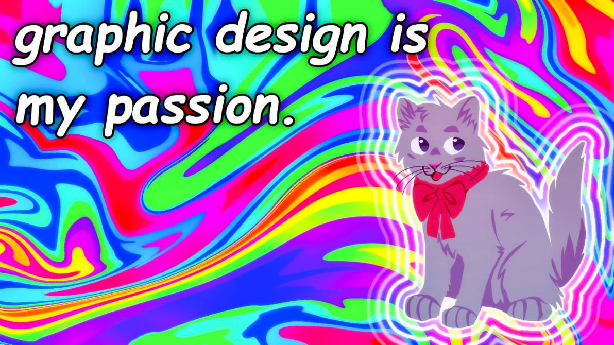

BA Multiplica - Ejercicio 1
Sobre mí
Hola mundo! mi nombre es Andrés Sebastián. Soy diseñador gráfico autónomo, orientado hacia la ilustración y el diseño UI/UX. Me desenvuelvo orientado a los resultados y tengo buena capacidad de trabajo en equipo. También cuento con conocimientos básicos en , marketing digital en redes sociales y producción de contenidos.
Mis Skills
- Diseño en múltiples formatos.
- Pensamiento creativo.
- Resolución de problemas de usabilidad y/o diseño.
- Proactividad y trabajo en equipo.
- Producción de contenido para redes y campañas.
- Inglés técnico básico.
- Desarrollo front-end básico.
- Buen manejo de programas de gestión de gráficos.
